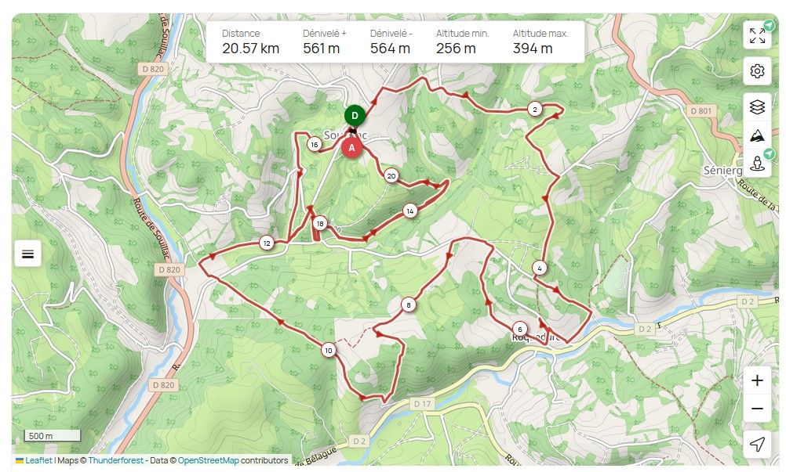
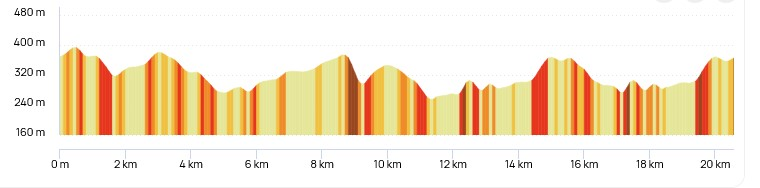

Trail - Sur les Traces de Napoléon
Soucirac - 14 juillet 2025
Plongez au cœur d’une aventure historique et sportive !.
Départ dans :
Les parcours
- Trail 20 km - Un parcours exigeant pour les passionnés de défis.
- Trail 12 km - Une course accessible alliant plaisir et performance.
- Randonnée 5 km - Une balade agréable pour profiter du paysage.




Pourquoi participer ?
Un cadre naturel exceptionnel, une ambiance conviviale et un défi à relever ! Venez profiter du repas traditionnel et champètre apres la course.
Inscription
Cliquez ici pour vous inscrire